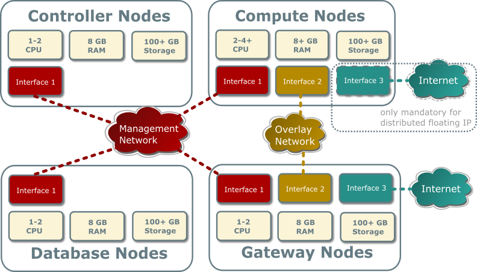
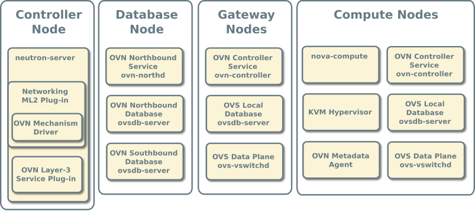
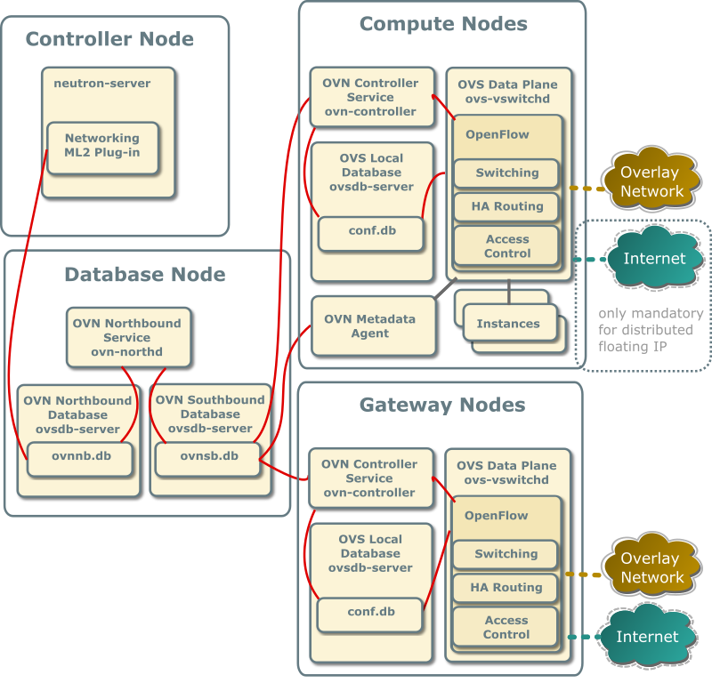
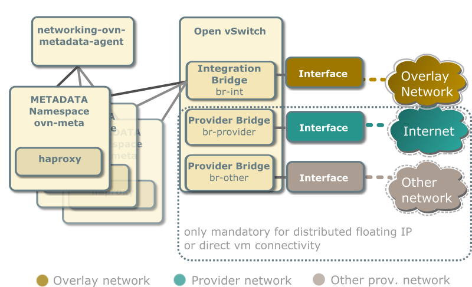

Reference architecture¶
The reference architecture defines the minimum environment necessary to deploy OpenStack with Open Virtual Network (OVN) integration for the Networking service in production with sufficient expectations of scale and performance. For evaluation purposes, you can deploy this environment using the Installation Guide or Vagrant. Any scaling or performance evaluations should use bare metal instead of virtual machines.
Layout¶
The reference architecture includes a minimum of four nodes.
The controller node contains the following components that provide enough functionality to launch basic instances:
One network interface for management
Identity service
Image service
Networking management with ML2 mechanism driver for OVN (control plane)
Compute management (control plane)
The database node contains the following components:
One network interface for management
OVN northbound service (
ovn-northd)Open vSwitch (OVS) database service (
ovsdb-server) for the OVN northbound database (ovnnb.db)Open vSwitch (OVS) database service (
ovsdb-server) for the OVN southbound database (ovnsb.db)
Note
For functional evaluation only, you can combine the controller and database nodes.
The two compute nodes contain the following components:
Two or three network interfaces for management, overlay networks, and optionally provider networks
Compute management (hypervisor)
Hypervisor (KVM)
OVN controller service (
ovn-controller)OVS data plane service (
ovs-vswitchd)OVS database service (
ovsdb-server) with OVS local configuration (conf.db) databaseOVN metadata agent (
ovn-metadata-agent)
The gateway nodes contain the following components:
Three network interfaces for management, overlay networks and provider networks.
OVN controller service (
ovn-controller)OVS data plane service (
ovs-vswitchd)OVS database service (
ovsdb-server) with OVS local configuration (conf.db) database
Note
Each OVN metadata agent provides metadata service locally on the compute nodes in a lightweight way. Each network being accessed by the instances of the compute node will have a corresponding metadata ovnmeta-$net_uuid namespace, and inside an haproxy will funnel the requests to the ovn-metadata-agent over a unix socket.
Such namespace can be very helpful for debug purposes to access the local instances on the compute node. If you login as root on such compute node you can execute:
ip netns ovnmeta-$net_uuid exec ssh user@my.instance.ip.address
Hardware layout¶

Service layout¶

Networking service with OVN integration¶
The reference architecture deploys the Networking service with OVN integration as described in the following scenarios:

With ovn driver, all the E/W traffic which traverses a virtual router is completely distributed, going from compute to compute node without passing through the gateway nodes.
N/S traffic that needs SNAT (without floating IPs) will always pass through the centralized gateway nodes, although, as soon as you have more than one gateway node ovn driver will make use of the HA capabilities of ovn.
Centralized Floating IPs¶
In this architecture, all the N/S router traffic (snat and floating IPs) goes through the gateway nodes.
The compute nodes don’t need connectivity to the external network, although it could be provided if we wanted to have direct connectivity to such network from some instances.
For external connectivity, gateway nodes have to set ovn-cms-options
with enable-chassis-as-gw in Open_vSwitch table’s external_ids column,
for example:
$ ovs-vsctl set open . external-ids:ovn-cms-options="enable-chassis-as-gw"
Distributed Floating IPs (DVR)¶
In this architecture, the floating IP N/S traffic flows directly from/to the compute nodes through the specific provider network bridge. In this case compute nodes need connectivity to the external network.
Each compute node contains the following network components:

Note
The Networking service creates a unique network namespace for each virtual network that enables the metadata service.
Several external connections can be optionally created via provider bridges. Those can be used for direct vm connectivity to the specific networks or the use of distributed floating ips.
Accessing OVN database content¶
OVN stores configuration data in a collection of OVS database tables. The following commands show the contents of the most common database tables in the northbound and southbound databases. The example database output in this section uses these commands with various output filters.
$ ovn-nbctl list Logical_Switch
$ ovn-nbctl list Logical_Switch_Port
$ ovn-nbctl list ACL
$ ovn-nbctl list Address_Set
$ ovn-nbctl list Logical_Router
$ ovn-nbctl list Logical_Router_Port
$ ovn-nbctl list Gateway_Chassis
$ ovn-sbctl list Chassis
$ ovn-sbctl list Encap
$ ovn-nbctl list Address_Set
$ ovn-sbctl lflow-list
$ ovn-sbctl list Multicast_Group
$ ovn-sbctl list Datapath_Binding
$ ovn-sbctl list Port_Binding
$ ovn-sbctl list MAC_Binding
$ ovn-sbctl list Gateway_Chassis
Note
By default, you must run these commands from the node containing the OVN databases.
Adding a compute node¶
When you add a compute node to the environment, the OVN controller service on it connects to the OVN southbound database and registers the node as a chassis.
_uuid : 9be8639d-1d0b-4e3d-9070-03a655073871
encaps : [2fcefdf4-a5e7-43ed-b7b2-62039cc7e32e]
external_ids : {ovn-bridge-mappings=""}
hostname : "compute1"
name : "410ee302-850b-4277-8610-fa675d620cb7"
vtep_logical_switches: []
The encaps field value refers to tunnel endpoint information
for the compute node.
_uuid : 2fcefdf4-a5e7-43ed-b7b2-62039cc7e32e
ip : "10.0.0.32"
options : {}
type : geneve
Security Groups/Rules¶
When a Neutron Security Group is created, the equivalent Port Group in OVN (pg-<security_group_id> is created). This Port Group references Neutron SG id in its external_ids column.
When a Neutron Port is created, the equivalent Logical Port in OVN is added to those Port Groups associated to the Neutron Security Groups this port belongs to.
When a Neutron Port is deleted, the associated Logical Port in OVN is deleted. Since the schema includes a weak reference to the port, when the LSP gets deleted, it is automatically deleted from any Port Group entry where it was previously present.
Every time a security group rule is created, instead of figuring out the ports affected by its SG and inserting an ACL row which will be referenced by different Logical Switches, we just reference it from the associated Port Group.
OVN operations¶
Creating a security group will cause the OVN mechanism driver to create a port group in the Port_Group table of the northbound DB:
_uuid : e96c5994-695d-4b9c-a17b-c7375ad281e2 acls : [33c3c2d0-bc7b-421b-ace9-10884851521a, c22170ec-da5d-4a59-b118-f7f0e370ebc4] external_ids : {"neutron:security_group_id"="ccbeffee-7b98-4b6f-adf7-d42027ca6447"} name : pg_ccbeffee_7b98_4b6f_adf7_d42027ca6447 ports : []
And it also creates the default ACLs for egress traffic in the ACL table of the northbound DB:
_uuid : 33c3c2d0-bc7b-421b-ace9-10884851521a action : allow-related direction : from-lport external_ids : {"neutron:security_group_rule_id"="655b0d7e-144e-4bd8-9243-10a261b91041"} log : false match : "inport == @pg_ccbeffee_7b98_4b6f_adf7_d42027ca6447 && ip4" meter : [] name : [] priority : 1002 severity : [] _uuid : c22170ec-da5d-4a59-b118-f7f0e370ebc4 action : allow-related direction : from-lport external_ids : {"neutron:security_group_rule_id"="a303a34f-5f19-494f-a9e2-e23f246bfcad"} log : false match : "inport == @pg_ccbeffee_7b98_4b6f_adf7_d42027ca6447 && ip6" meter : [] name : [] priority : 1002 severity : []
Ports with no security groups¶
When a port doesn’t belong to any Security Group and port security is enabled,
we, by default, drop all the traffic to/from that port. In order to implement
this through Port Groups, we’ll create a special Port Group with a fixed name
(neutron_pg_drop) which holds the ACLs to drop all the traffic.
This PG is created automatically once before neutron-server forks into workers.
Networks¶
Routers¶
Instances¶
Launching an instance causes the same series of operations regardless
of the network. The following example uses the provider provider
network, cirros image, m1.tiny flavor, default security
group, and mykey key.